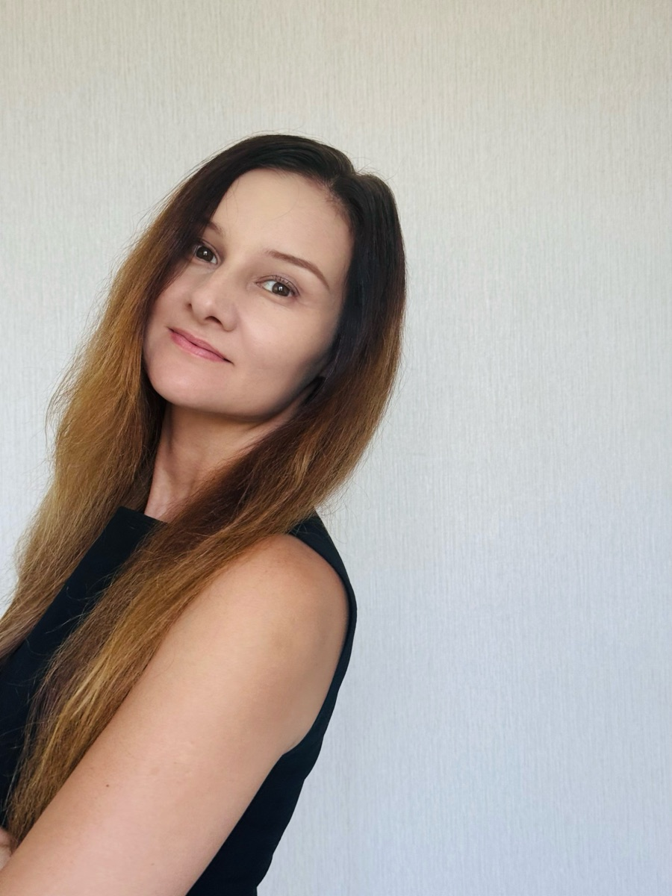

Your soul arrived here carrying a specific frequency. The Scan is a map of something that was already there before you had words for it.
Answer seven questions. At the end your Origin is named, and you receive a personal preview of your Soul Frequency reading.

Every session begins with a question.
Sometimes it ends with a new one.
I was unsure whether I could open up and feel at ease.
The atmosphere felt comfortable, calm and spacious enough to explore what was happening inside me.
I left feeling safe, more open and more connected to myself.
45 minutes one to one. I read your StarSeedSoul Origin: your frequency, your mission, the themes that keep returning to your life.
Your question comes straight to me. I answer personally, by email.
Your question is with me. I will answer you personally by email.